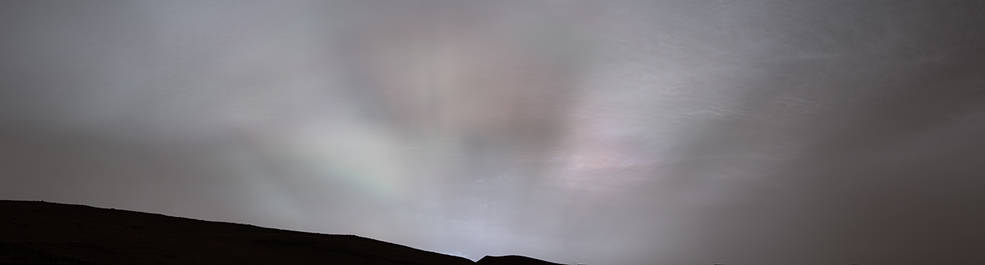
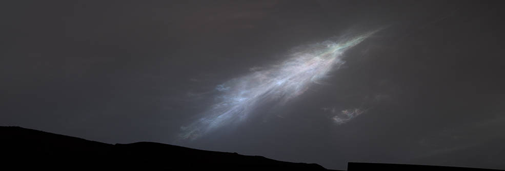

NASA의 큐리오시티, 화성 최초의 '태양 광선' 관측

화성의 일몰은 독특하게 변덕스럽 습니다 . 하지만 NASA의 큐리오시티 로버는 지난 달 눈에 띄는 장면을 포착했습니다. 2월 2일 태양이 지평선 너머로 내려오면서 한 줄기 빛이 구름 둑을 비췄습니다. 이러한 "태양 광선"은 라틴어로 "황혼"을 의미하는 어두컴컴한 광선으로도 알려져 있습니다. 태양 광선이 화성에서 이렇게 명확하게 관측된 것은 이번이 처음입니다.
큐리오시티는 2021년 야광운 또는 밤에 빛나는 구름에 대한 관측을 기반으로 하는 로버의 최신 황혼 구름 조사 중에 장면을 포착했습니다 . 대부분의 화성 구름은 지상에서 60km를 넘지 않고 얼음으로 구성되어 있지만 최신 이미지의 구름은 특히 추운 더 높은 고도에 있는 것으로 보입니다. 이것은 이 구름이 이산화탄소 얼음 또는 드라이아이스로 만들어졌다는 것을 암시합니다.
지구에서와 마찬가지로 구름은 과학자들에게 날씨를 이해하는 데 복잡하지만 중요한 정보를 제공합니다. 언제 어디서 구름이 형성되는지 살펴봄으로써 과학자들은 화성 대기의 구성과 온도, 그 안의 바람에 대해 더 많이 알 수 있습니다.
2021년 구름 조사에는 Curiosity의 흑백 내비게이션 카메라로 더 많은 이미징이 포함되어 구름이 움직일 때의 구조를 자세히 볼 수 있습니다. 그러나 1월에 시작되어 3월 중순에 마무리될 최근 조사는 과학자들이 시간이 지남에 따라 구름 입자가 어떻게 성장하는지 볼 수 있도록 도와주는 로버의 컬러 마스트 카메라 또는 마스트캠에 더 자주 의존합니다.
큐리오시티는 태양 광선 이미지 외에도 1월 27일 깃털 모양의 다채로운 구름 세트를 포착했습니다. 햇빛을 받으면 특정 유형의 구름이 무지개 빛이라는 무지개 모양의 디스플레이를 만들 수 있습니다.

콜로라도 주 볼더에 있는 우주 과학 연구소의 대기 과학자인 마크 레먼(Mark Lemmon)은 “우리가 무지갯빛을 보는 것은 구름의 입자 크기가 구름의 각 부분에서 이웃 입자 크기와 동일하다는 것을 의미합니다. “색상 전환을 살펴봄으로써 입자 크기가 구름 전체에서 변화하는 것을 볼 수 있습니다. 이는 클라우드가 진화하는 방식과 시간이 지남에 따라 입자의 크기가 어떻게 변하는지를 알려줍니다.”
Curiosity는 태양 광선과 무지갯빛 구름을 모두 파노라마로 캡처했으며 각각은 지구로 전송된 28개의 이미지에서 함께 연결되었습니다. 이미지는 하이라이트를 강조하기 위해 처리되었습니다.